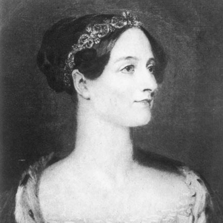
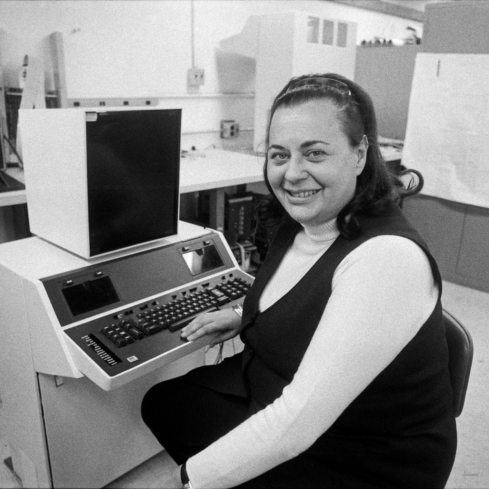
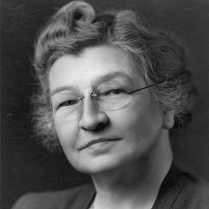

Acerca de
Technology and Women, desea transmitir a cualquier genero, información sobre mujeres informaticas.
Mostraremos a las ocho mujeres informaticas que tuvieron un gran impacto
en tal.
Pilares + Codigo + Genero nos permite difundir temas tecnologicos.
Mujeres Informaticas

Ada Lovelace
Primer programadora y madre de la programación.

Evelyn Berezin
Invento en 1953 el ordenador de oficina.
Frances Allen
Pionera en la automatizacion de tareas paralelas.
Grace Murray
Desarrollo el primer compiador.
Hedy Lamarr
Inventora de la tecnología precursora.

Jude Milhon
Creadora del "cyberpunk".
Lynn Conway
Pionera en el campo-diseño de chips.

Secret Rosies
Seis mujeres programaron ENIAC.